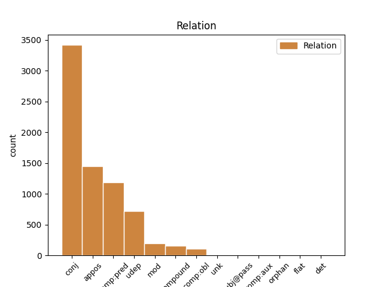
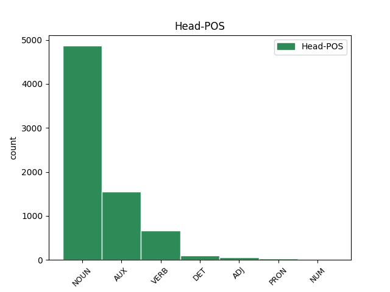
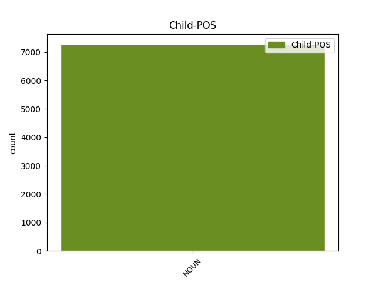

Distribution of features within this leaf



Agreement Rules sorted by frequency.
- When the dependent token is the conjunct(conj) of the head token, and the dependent token is NOUN.
1 L' _ _ _ _ 0 _ _ _
2 acte _ _ _ _ 0 _ _ _
3 xifra _ _ _ _ 0 _ _ _
4 l' _ _ _ _ 0 _ _ _
5 activitat _ _ _ _ 0 _ _ _
6 delictiva _ _ _ _ 0 _ _ _
7 d' _ _ _ _ 0 _ _ _
8 ETA _ _ _ _ 0 _ _ _
9 , _ _ _ _ 0 _ _ _
10 des _ _ _ _ 0 _ _ _
11 de _ _ _ _ 0 _ _ _
12 la _ _ _ _ 0 _ _ _
13 seva _ _ _ _ 0 _ _ _
14 creació _ _ _ _ 0 _ _ _
15 fins _ _ _ _ 0 _ _ _
16 a _ _ _ _ 0 _ _ _
17 l' _ _ _ _ 0 _ _ _
18 agost _ _ _ _ 0 _ _ _
19 del _ _ _ _ 0 _ _ _
20 2002 _ _ _ _ 0 _ _ _
21 , _ _ _ _ 0 _ _ _
22 en _ _ _ _ 0 _ _ _
23 3.391 _ _ _ _ 0 _ _ _
24 accions _ _ _ _ 0 _ _ _
25 terroristes _ _ _ _ 0 _ _ _
26 que _ _ _ _ 0 _ _ _
27 s' _ _ _ _ 0 _ _ _
28 han _ _ _ _ 0 _ _ _
29 saldat _ _ _ _ 0 _ _ _
30 amb _ _ _ _ 0 _ _ _
31 836 _ _ _ _ 0 _ _ _
32 morts mort NOUN NOUN Gender=Masc|Number=Plur 0 _ _ _
33 i _ _ _ _ 0 _ _ _
34 2.367 _ _ _ _ 0 _ _ _
35 ferits ferit NOUN NOUN Gender=Masc|Number=Plur 32 conj _ SpaceAfter=No
36 . _ _ _ _ 0 _ _ _
1 Segons _ _ _ _ 0 _ _ _
2 l' _ _ _ _ 0 _ _ _
3 opinió _ _ _ _ 0 _ _ _
4 de _ _ _ _ 0 _ _ _
5 García _ _ _ _ 0 _ _ _
6 Escudero _ _ _ _ 0 _ _ _
7 , _ _ _ _ 0 _ _ _
8 els _ _ _ _ 0 _ _ _
9 socialistes _ _ _ _ 0 _ _ _
10 " _ _ _ _ 0 _ _ _
11 no _ _ _ _ 0 _ _ _
12 l' _ _ _ _ 0 _ _ _
13 haurien _ _ _ _ 0 _ _ _
14 de _ _ _ _ 0 _ _ _
15 veure _ _ _ _ 0 _ _ _
16 malament _ _ _ _ 0 _ _ _
17 " _ _ _ _ 0 _ _ _
18 ja _ _ _ _ 0 _ _ _
19 que _ _ _ _ 0 _ _ _
20 , _ _ _ _ 0 _ _ _
21 va _ _ _ _ 0 _ _ _
22 assegurar _ _ _ _ 0 _ _ _
23 , _ _ _ _ 0 _ _ _
24 " _ _ _ _ 0 _ _ _
25 al _ _ _ _ 0 _ _ _
26 cap _ _ _ _ 0 _ _ _
27 i _ _ _ _ 0 _ _ _
28 a _ _ _ _ 0 _ _ _
29 la _ _ _ _ 0 _ _ _
30 fi _ _ _ _ 0 _ _ _
31 , _ _ _ _ 0 _ _ _
32 el _ _ _ _ 0 _ _ _
33 que _ _ _ _ 0 _ _ _
34 està _ _ _ _ 0 _ _ _
35 buscant _ _ _ _ 0 _ _ _
36 és ser AUX AUX Mood=Ind|Number=Sing|Person=3|Tense=Pres|VerbForm=Fin 0 _ _ _
37 l' _ _ _ _ 0 _ _ _
38 eficàcia eficàcia NOUN NOUN Gender=Fem|Number=Sing 36 comp:pred _ _
39 en _ _ _ _ 0 _ _ _
40 la _ _ _ _ 0 _ _ _
41 gestió _ _ _ _ 0 _ _ _
42 i _ _ _ _ 0 _ _ _
43 conjugar _ _ _ _ 0 _ _ _
44 d' _ _ _ _ 0 _ _ _
45 una _ _ _ _ 0 _ _ _
46 millor _ _ _ _ 0 _ _ _
47 manera _ _ _ _ 0 _ _ _
48 el _ _ _ _ 0 _ _ _
49 que _ _ _ _ 0 _ _ _
50 és _ _ _ _ 0 _ _ _
51 la _ _ _ _ 0 _ _ _
52 directriu _ _ _ _ 0 _ _ _
53 política _ _ _ _ 0 _ _ _
54 amb _ _ _ _ 0 _ _ _
55 la _ _ _ _ 0 _ _ _
56 gestió _ _ _ _ 0 _ _ _
57 més _ _ _ _ 0 _ _ _
58 tècnica _ _ _ _ 0 _ _ _
59 " _ _ _ _ 0 _ _ _
60 . _ _ _ _ 0 _ _ _
1 En _ _ _ _ 0 _ _ _
2 un _ _ _ _ 0 _ _ _
3 document _ _ _ _ 0 _ _ _
4 titulat _ _ _ _ 0 _ _ _
5 Normandia _ _ _ _ 0 _ _ _
6 , _ _ _ _ 0 _ _ _
7 que _ _ _ _ 0 _ _ _
8 és _ _ _ _ 0 _ _ _
9 la _ _ _ _ 0 _ _ _
10 clau _ _ _ _ 0 _ _ _
11 assignada _ _ _ _ 0 _ _ _
12 pels _ _ _ _ 0 _ _ _
13 responsables _ _ _ _ 0 _ _ _
14 de _ _ _ _ 0 _ _ _
15 l' _ _ _ _ 0 _ _ _
16 organització _ _ _ _ 0 _ _ _
17 ETA _ _ _ _ 0 _ _ _
18 a _ _ _ _ 0 _ _ _
19 Nicaragua _ _ _ _ 0 _ _ _
20 a _ _ _ _ 0 _ _ _
21 les _ _ _ _ 0 _ _ _
22 seves _ _ _ _ 0 _ _ _
23 comunicacions _ _ _ _ 0 _ _ _
24 internes _ _ _ _ 0 _ _ _
25 , _ _ _ _ 0 _ _ _
26 es _ _ _ _ 0 _ _ _
27 fa _ _ _ _ 0 _ _ _
28 referència _ _ _ _ 0 _ _ _
29 al _ _ _ _ 0 _ _ _
30 fons _ _ _ _ 0 _ _ _
31 basc _ _ _ _ 0 _ _ _
32 , _ _ _ _ 0 _ _ _
33 segons _ _ _ _ 0 _ _ _
34 el _ _ _ _ 0 _ _ _
35 magistrat _ _ _ _ 0 _ _ _
36 Baltasar _ _ _ _ 0 _ _ _
37 Garzón _ _ _ _ 0 _ _ _
38 , _ _ _ _ 0 _ _ _
39 " _ _ _ _ 0 _ _ _
40 com _ _ _ _ 0 _ _ _
41 a _ _ _ _ 0 _ _ _
42 instrument _ _ _ _ 0 _ _ _
43 per _ _ _ _ 0 _ _ _
44 finançar _ _ _ _ 0 _ _ _
45 un _ _ _ _ 0 _ _ _
46 projecte projecte NOUN NOUN Gender=Masc|Number=Sing 0 _ _ _
47 empresarial _ _ _ _ 0 _ _ _
48 , _ _ _ _ 0 _ _ _
49 iniciativa iniciativa NOUN NOUN Gender=Fem|Number=Sing 46 appos _ _
50 dels _ _ _ _ 0 _ _ _
51 militants _ _ _ _ 0 _ _ _
52 d' _ _ _ _ 0 _ _ _
53 ETA _ _ _ _ 0 _ _ _
54 a _ _ _ _ 0 _ _ _
55 Nicaragua _ _ _ _ 0 _ _ _
56 , _ _ _ _ 0 _ _ _
57 que _ _ _ _ 0 _ _ _
58 facilitaria _ _ _ _ 0 _ _ _
59 la _ _ _ _ 0 _ _ _
60 creació _ _ _ _ 0 _ _ _
61 de _ _ _ _ 0 _ _ _
62 llocs _ _ _ _ 0 _ _ _
63 de _ _ _ _ 0 _ _ _
64 treball _ _ _ _ 0 _ _ _
65 i _ _ _ _ 0 _ _ _
66 el _ _ _ _ 0 _ _ _
67 sosteniment _ _ _ _ 0 _ _ _
68 econòmic _ _ _ _ 0 _ _ _
69 de _ _ _ _ 0 _ _ _
70 tals _ _ _ _ 0 _ _ _
71 militants _ _ _ _ 0 _ _ _
72 " _ _ _ _ 0 _ _ _
73 . _ _ _ _ 0 _ _ _
1 HB _ _ _ _ 0 _ _ _
2 ha _ _ _ _ 0 _ _ _
3 gestionat _ _ _ _ 0 _ _ _
4 , _ _ _ _ 0 _ _ _
5 des _ _ _ _ 0 _ _ _
6 de _ _ _ _ 0 _ _ _
7 la _ _ _ _ 0 _ _ _
8 dècada _ _ _ _ 0 _ _ _
9 dels _ _ _ _ 0 _ _ _
10 90 _ _ _ _ 0 _ _ _
11 , _ _ _ _ 0 _ _ _
12 el _ _ _ _ 0 _ _ _
13 cobrament _ _ _ _ 0 _ _ _
14 de _ _ _ _ 0 _ _ _
15 l' _ _ _ _ 0 _ _ _
16 impost _ _ _ _ 0 _ _ _
17 revolucionari _ _ _ _ 0 _ _ _
18 ( _ _ _ _ 0 _ _ _
19 extorsió _ _ _ _ 0 _ _ _
20 econòmica _ _ _ _ 0 _ _ _
21 ) _ _ _ _ 0 _ _ _
22 , _ _ _ _ 0 _ _ _
23 per _ _ _ _ 0 _ _ _
24 ordre _ _ _ _ 0 _ _ _
25 d' _ _ _ _ 0 _ _ _
26 ETA _ _ _ _ 0 _ _ _
27 , _ _ _ _ 0 _ _ _
28 com _ _ _ _ 0 _ _ _
29 consta _ _ _ _ 0 _ _ _
30 en _ _ _ _ 0 _ _ _
31 un _ _ _ _ 0 _ _ _
32 document _ _ _ _ 0 _ _ _
33 del _ _ _ _ 0 _ _ _
34 juny _ _ _ _ 0 _ _ _
35 del _ _ _ _ 0 _ _ _
36 1993 _ _ _ _ 0 _ _ _
37 dirigit _ _ _ _ 0 _ _ _
38 a _ _ _ _ 0 _ _ _
39 ETA _ _ _ _ 0 _ _ _
40 : _ _ _ _ 0 _ _ _
41 " _ _ _ _ 0 _ _ _
42 La _ _ _ _ 0 _ _ _
43 setmana setmana NOUN NOUN Gender=Fem|Number=Sing 46 udep _ _
44 passada _ _ _ _ 0 _ _ _
45 es _ _ _ _ 0 _ _ _
46 va anar AUX AUX Mood=Ind|Number=Sing|Person=3|Tense=Pres|VerbForm=Fin 0 _ _ _
47 rebre _ _ _ _ 0 _ _ _
48 a _ _ _ _ 0 _ _ _
49 Herri _ _ _ _ 0 _ _ _
50 Batasuna _ _ _ _ 0 _ _ _
51 la _ _ _ _ 0 _ _ _
52 trucada _ _ _ _ 0 _ _ _
53 de _ _ _ _ 0 _ _ _
54 Joseba _ _ _ _ 0 _ _ _
55 Egibar _ _ _ _ 0 _ _ _
56 ( _ _ _ _ 0 _ _ _
57 portaveu _ _ _ _ 0 _ _ _
58 del _ _ _ _ 0 _ _ _
59 PNB _ _ _ _ 0 _ _ _
60 ) _ _ _ _ 0 _ _ _
61 . _ _ _ _ 0 _ _ _
1 Aquesta _ _ _ _ 0 _ _ _
2 matinada _ _ _ _ 0 _ _ _
3 encara _ _ _ _ 0 _ _ _
4 no _ _ _ _ 0 _ _ _
5 estava _ _ _ _ 0 _ _ _
6 clar _ _ _ _ 0 _ _ _
7 si _ _ _ _ 0 _ _ _
8 es _ _ _ _ 0 _ _ _
9 tractava _ _ _ _ 0 _ _ _
10 d' _ _ _ _ 0 _ _ _
11 una _ _ _ _ 0 _ _ _
12 furgoneta furgoneta NOUN NOUN Gender=Fem|Number=Sing 0 _ _ _
13 bomba bomba NOUN NOUN Gender=Fem|Number=Sing 12 mod _ _
14 o _ _ _ _ 0 _ _ _
15 bé _ _ _ _ 0 _ _ _
16 si _ _ _ _ 0 _ _ _
17 el _ _ _ _ 0 _ _ _
18 vehicle _ _ _ _ 0 _ _ _
19 només _ _ _ _ 0 _ _ _
20 transportava _ _ _ _ 0 _ _ _
21 els _ _ _ _ 0 _ _ _
22 explosius _ _ _ _ 0 _ _ _
23 per _ _ _ _ 0 _ _ _
24 ser _ _ _ _ 0 _ _ _
25 utilitzats _ _ _ _ 0 _ _ _
26 posteriorment _ _ _ _ 0 _ _ _
27 . _ _ _ _ 0 _ _ _
1 El _ _ _ _ 0 _ _ _
2 dirigent _ _ _ _ 0 _ _ _
3 conservador _ _ _ _ 0 _ _ _
4 va _ _ _ _ 0 _ _ _
5 fer _ _ _ _ 0 _ _ _
6 una _ _ _ _ 0 _ _ _
7 crida _ _ _ _ 0 _ _ _
8 al _ _ _ _ 0 _ _ _
9 PSOE _ _ _ _ 0 _ _ _
10 perquè _ _ _ _ 0 _ _ _
11 doni _ _ _ _ 0 _ _ _
12 el _ _ _ _ 0 _ _ _
13 seu _ _ _ _ 0 _ _ _
14 suport _ _ _ _ 0 _ _ _
15 a _ _ _ _ 0 _ _ _
16 la _ _ _ _ 0 _ _ _
17 proposta _ _ _ _ 0 _ _ _
18 , _ _ _ _ 0 _ _ _
19 que _ _ _ _ 0 _ _ _
20 tirarà tirar VERB VERB Mood=Ind|Number=Sing|Person=3|Tense=Fut|VerbForm=Fin 0 _ _ _
21 endavant endavant NOUN NOUN Number=Sing 20 compound _ _
22 gràcies _ _ _ _ 0 _ _ _
23 a _ _ _ _ 0 _ _ _
24 la _ _ _ _ 0 _ _ _
25 majoria _ _ _ _ 0 _ _ _
26 absoluta _ _ _ _ 0 _ _ _
27 del _ _ _ _ 0 _ _ _
28 PP _ _ _ _ 0 _ _ _
29 . _ _ _ _ 0 _ _ _
1 La _ _ _ _ 0 _ _ _
2 culpa culpa NOUN NOUN Gender=Fem|Number=Sing 36 comp:obl _ _
3 de _ _ _ _ 0 _ _ _
4 la _ _ _ _ 0 _ _ _
5 mort _ _ _ _ 0 _ _ _
6 d' _ _ _ _ 0 _ _ _
7 un _ _ _ _ 0 _ _ _
8 nen _ _ _ _ 0 _ _ _
9 de _ _ _ _ 0 _ _ _
10 4 _ _ _ _ 0 _ _ _
11 anys _ _ _ _ 0 _ _ _
12 al _ _ _ _ 0 _ _ _
13 barri _ _ _ _ 0 _ _ _
14 turístic _ _ _ _ 0 _ _ _
15 de _ _ _ _ 0 _ _ _
16 Can _ _ _ _ 0 _ _ _
17 Picafort _ _ _ _ 0 _ _ _
18 ( _ _ _ _ 0 _ _ _
19 municipi _ _ _ _ 0 _ _ _
20 de _ _ _ _ 0 _ _ _
21 Santa _ _ _ _ 0 _ _ _
22 Margalida _ _ _ _ 0 _ _ _
23 , _ _ _ _ 0 _ _ _
24 Mallorca _ _ _ _ 0 _ _ _
25 ) _ _ _ _ 0 _ _ _
26 , _ _ _ _ 0 _ _ _
27 atacat _ _ _ _ 0 _ _ _
28 per _ _ _ _ 0 _ _ _
29 un _ _ _ _ 0 _ _ _
30 gos _ _ _ _ 0 _ _ _
31 de _ _ _ _ 0 _ _ _
32 presa _ _ _ _ 0 _ _ _
33 , _ _ _ _ 0 _ _ _
34 no _ _ _ _ 0 _ _ _
35 la _ _ _ _ 0 _ _ _
36 té tenir VERB VERB Mood=Ind|Number=Sing|Person=3|Tense=Pres|VerbForm=Fin 0 _ _ _
37 l' _ _ _ _ 0 _ _ _
38 animal _ _ _ _ 0 _ _ _
39 , _ _ _ _ 0 _ _ _
40 sinó _ _ _ _ 0 _ _ _
41 el _ _ _ _ 0 _ _ _
42 seu _ _ _ _ 0 _ _ _
43 propietari _ _ _ _ 0 _ _ _
44 . _ _ _ _ 0 _ _ _
1 La _ _ _ _ 0 _ _ _
2 dona dona NOUN NOUN Gender=Fem|Number=Sing 3 subj@pass _ _
3 va anar AUX AUX Mood=Ind|Number=Sing|Person=3|Tense=Pres|VerbForm=Fin 0 _ _ _
4 poder _ _ _ _ 0 _ _ _
5 -se _ _ _ _ 0 _ _ _
6 escapolir _ _ _ _ 0 _ _ _
7 amb _ _ _ _ 0 _ _ _
8 l' _ _ _ _ 0 _ _ _
9 ajut _ _ _ _ 0 _ _ _
10 d' _ _ _ _ 0 _ _ _
11 uns _ _ _ _ 0 _ _ _
12 veïns _ _ _ _ 0 _ _ _
13 . _ _ _ _ 0 _ _ _
1 El el DET DET Definite=Def|Gender=Masc|Number=Sing|PronType=Art 0 _ _ _
2 debat _ _ _ _ 0 _ _ _
3 sobre _ _ _ _ 0 _ _ _
4 la _ _ _ _ 0 _ _ _
5 corrupció corrupció NOUN NOUN Gender=Fem|Number=Sing 1 unk _ SpaceAfter=No
6 . _ _ _ _ 0 _ _ _
1 Segons _ _ _ _ 0 _ _ _
2 Zapatero _ _ _ _ 0 _ _ _
3 , _ _ _ _ 0 _ _ _
4 Manuel _ _ _ _ 0 _ _ _
5 Fraga _ _ _ _ 0 _ _ _
6 - _ _ _ _ 0 _ _ _
7 de _ _ _ _ 0 _ _ _
8 qui _ _ _ _ 0 _ _ _
9 va _ _ _ _ 0 _ _ _
10 elogiar _ _ _ _ 0 _ _ _
11 irònicament _ _ _ _ 0 _ _ _
12 la _ _ _ _ 0 _ _ _
13 coherència _ _ _ _ 0 _ _ _
14 perquè _ _ _ _ 0 _ _ _
15 " _ _ _ _ 0 _ _ _
16 és _ _ _ _ 0 _ _ _
17 el _ _ _ _ 0 _ _ _
18 mateix _ _ _ _ 0 _ _ _
19 que _ _ _ _ 0 _ _ _
20 fa _ _ _ _ 0 _ _ _
21 40 _ _ _ _ 0 _ _ _
22 anys _ _ _ _ 0 _ _ _
23 " _ _ _ _ 0 _ _ _
24 - _ _ _ _ 0 _ _ _
25 serà _ _ _ _ 0 _ _ _
26 " _ _ _ _ 0 _ _ _
27 derrotat _ _ _ _ 0 _ _ _
28 " _ _ _ _ 0 _ _ _
29 a _ _ _ _ 0 _ _ _
30 les _ _ _ _ 0 _ _ _
31 eleccions _ _ _ _ 0 _ _ _
32 del _ _ _ _ 0 _ _ _
33 21 _ _ _ _ 0 _ _ _
34 d' _ _ _ _ 0 _ _ _
35 octubre _ _ _ _ 0 _ _ _
36 per _ _ _ _ 0 _ _ _
37 haver _ _ _ _ 0 _ _ _
38 exercit _ _ _ _ 0 _ _ _
39 el _ _ _ _ 0 _ _ _
40 poder _ _ _ _ 0 _ _ _
41 de _ _ _ _ 0 _ _ _
42 forma _ _ _ _ 0 _ _ _
43 " _ _ _ _ 0 _ _ _
44 despòtica _ _ _ _ 0 _ _ _
45 " _ _ _ _ 0 _ _ _
46 i _ _ _ _ 0 _ _ _
47 haver _ _ _ _ 0 _ _ _
48 fracassat fracassar AUX AUX Gender=Masc|Number=Sing|Tense=Past|VerbForm=Part 0 _ _ _
49 , _ _ _ _ 0 _ _ _
50 com _ _ _ _ 0 _ _ _
51 José _ _ _ _ 0 _ _ _
52 María _ _ _ _ 0 _ _ _
53 Aznar _ _ _ _ 0 _ _ _
54 , _ _ _ _ 0 _ _ _
55 davant _ _ _ _ 0 _ _ _
56 problemes _ _ _ _ 0 _ _ _
57 tan _ _ _ _ 0 _ _ _
58 greus _ _ _ _ 0 _ _ _
59 per _ _ _ _ 0 _ _ _
60 a _ _ _ _ 0 _ _ _
61 Galícia _ _ _ _ 0 _ _ _
62 com _ _ _ _ 0 _ _ _
63 la _ _ _ _ 0 _ _ _
64 pesca pesca NOUN NOUN Gender=Fem|Number=Sing 48 comp:aux _ _
65 i _ _ _ _ 0 _ _ _
66 les _ _ _ _ 0 _ _ _
67 vaques _ _ _ _ 0 _ _ _
68 boges _ _ _ _ 0 _ _ _
69 . _ _ _ _ 0 _ _ _
1 En _ _ _ _ 0 _ _ _
2 primera _ _ _ _ 0 _ _ _
3 fila _ _ _ _ 0 _ _ _
4 , _ _ _ _ 0 _ _ _
5 contrabaixos _ _ _ _ 0 _ _ _
6 , _ _ _ _ 0 _ _ _
7 primers _ _ _ _ 0 _ _ _
8 violins violí NOUN NOUN Gender=Masc|Number=Plur 0 _ _ _
9 , _ _ _ _ 0 _ _ _
10 violoncels _ _ _ _ 0 _ _ _
11 , _ _ _ _ 0 _ _ _
12 violes _ _ _ _ 0 _ _ _
13 i _ _ _ _ 0 _ _ _
14 segons _ _ _ _ 0 _ _ _
15 violins violí NOUN NOUN Gender=Masc|Number=Plur 8 orphan _ SpaceAfter=No
16 , _ _ _ _ 0 _ _ _
17 amb _ _ _ _ 0 _ _ _
18 els _ _ _ _ 0 _ _ _
19 timbals _ _ _ _ 0 _ _ _
20 al _ _ _ _ 0 _ _ _
21 darrere _ _ _ _ 0 _ _ _
22 . _ _ _ _ 0 _ _ _
1 Obra obra NOUN NOUN Gender=Fem|Number=Sing 0 _ _ _
2 de _ _ _ _ 0 _ _ _
3 l' _ _ _ _ 0 _ _ _
4 escriptora _ _ _ _ 0 _ _ _
5 britànica _ _ _ _ 0 _ _ _
6 Joanne _ _ _ _ 0 _ _ _
7 Kathleen _ _ _ _ 0 _ _ _
8 Rowling _ _ _ _ 0 _ _ _
9 , _ _ _ _ 0 _ _ _
10 la _ _ _ _ 0 _ _ _
11 sèrie sèrie NOUN NOUN Gender=Fem|Number=Sing 1 flat _ _
12 ha _ _ _ _ 0 _ _ _
13 venut _ _ _ _ 0 _ _ _
14 ja _ _ _ _ 0 _ _ _
15 80 _ _ _ _ 0 _ _ _
16 milions _ _ _ _ 0 _ _ _
17 d' _ _ _ _ 0 _ _ _
18 exemplars _ _ _ _ 0 _ _ _
19 a _ _ _ _ 0 _ _ _
20 tot _ _ _ _ 0 _ _ _
21 el _ _ _ _ 0 _ _ _
22 món _ _ _ _ 0 _ _ _
23 en _ _ _ _ 0 _ _ _
24 tres _ _ _ _ 0 _ _ _
25 anys _ _ _ _ 0 _ _ _
26 . _ _ _ _ 0 _ _ _
Disagree Examples:
1 El _ _ _ _ 0 _ _ _
2 Tribunal _ _ _ _ 0 _ _ _
3 Suprem _ _ _ _ 0 _ _ _
4 ( _ _ _ _ 0 _ _ _
5 TS _ _ _ _ 0 _ _ _
6 ) _ _ _ _ 0 _ _ _
7 ha _ _ _ _ 0 _ _ _
8 confirmat _ _ _ _ 0 _ _ _
9 la _ _ _ _ 0 _ _ _
10 condemna _ _ _ _ 0 _ _ _
11 a _ _ _ _ 0 _ _ _
12 quatre _ _ _ _ 0 _ _ _
13 anys any NOUN NOUN Gender=Masc|Number=Plur 0 _ _ _
14 d' _ _ _ _ 0 _ _ _
15 inhabilitació _ _ _ _ 0 _ _ _
16 especial _ _ _ _ 0 _ _ _
17 i _ _ _ _ 0 _ _ _
18 una _ _ _ _ 0 _ _ _
19 multa multa NOUN NOUN Gender=Fem|Number=Sing 13 conj _ _
20 de _ _ _ _ 0 _ _ _
21 3,6 _ _ _ _ 0 _ _ _
22 milions _ _ _ _ 0 _ _ _
23 de _ _ _ _ 0 _ _ _
24 pessetes _ _ _ _ 0 _ _ _
25 per _ _ _ _ 0 _ _ _
26 a _ _ _ _ 0 _ _ _
27 quatre _ _ _ _ 0 _ _ _
28 veterinaris _ _ _ _ 0 _ _ _
29 gironins _ _ _ _ 0 _ _ _
30 , _ _ _ _ 0 _ _ _
31 per _ _ _ _ 0 _ _ _
32 haver _ _ _ _ 0 _ _ _
33 se _ _ _ _ 0 _ _ _
34 beneficiat _ _ _ _ 0 _ _ _
35 dels _ _ _ _ 0 _ _ _
36 càrrecs _ _ _ _ 0 _ _ _
37 públics _ _ _ _ 0 _ _ _
38 que _ _ _ _ 0 _ _ _
39 desenvolupaven _ _ _ _ 0 _ _ _
40 i _ _ _ _ 0 _ _ _
41 la _ _ _ _ 0 _ _ _
42 seva _ _ _ _ 0 _ _ _
43 relació _ _ _ _ 0 _ _ _
44 amb _ _ _ _ 0 _ _ _
45 les _ _ _ _ 0 _ _ _
46 empreses _ _ _ _ 0 _ _ _
47 càrniques _ _ _ _ 0 _ _ _
48 de _ _ _ _ 0 _ _ _
49 la _ _ _ _ 0 _ _ _
50 zona _ _ _ _ 0 _ _ _
51 en _ _ _ _ 0 _ _ _
52 oferir _ _ _ _ 0 _ _ _
53 los _ _ _ _ 0 _ _ _
54 serveis _ _ _ _ 0 _ _ _
55 particulars _ _ _ _ 0 _ _ _
56 . _ _ _ _ 0 _ _ _
1 Una _ _ _ _ 0 _ _ _
2 setantena _ _ _ _ 0 _ _ _
3 de _ _ _ _ 0 _ _ _
4 treballadors _ _ _ _ 0 _ _ _
5 de _ _ _ _ 0 _ _ _
6 Fomento _ _ _ _ 0 _ _ _
7 de _ _ _ _ 0 _ _ _
8 Construcciones _ _ _ _ 0 _ _ _
9 y _ _ _ _ 0 _ _ _
10 Contratas _ _ _ _ 0 _ _ _
11 a _ _ _ _ 0 _ _ _
12 Manresa _ _ _ _ 0 _ _ _
13 , _ _ _ _ 0 _ _ _
14 gairebé _ _ _ _ 0 _ _ _
15 la _ _ _ _ 0 _ _ _
16 totalitat _ _ _ _ 0 _ _ _
17 de _ _ _ _ 0 _ _ _
18 la _ _ _ _ 0 _ _ _
19 plantilla _ _ _ _ 0 _ _ _
20 , _ _ _ _ 0 _ _ _
21 s' _ _ _ _ 0 _ _ _
22 han haver AUX AUX Mood=Ind|Number=Plur|Person=3|Tense=Pres|VerbForm=Fin 0 _ _ _
23 manifestat _ _ _ _ 0 _ _ _
24 aquest _ _ _ _ 0 _ _ _
25 migdia migdia NOUN NOUN Gender=Masc|Number=Sing 22 udep _ _
26 pels _ _ _ _ 0 _ _ _
27 carrers _ _ _ _ 0 _ _ _
28 de _ _ _ _ 0 _ _ _
29 la _ _ _ _ 0 _ _ _
30 ciutat _ _ _ _ 0 _ _ _
31 . _ _ _ _ 0 _ _ _
1 L' _ _ _ _ 0 _ _ _
2 Ajuntament _ _ _ _ 0 _ _ _
3 de _ _ _ _ 0 _ _ _
4 Manresa _ _ _ _ 0 _ _ _
5 ha _ _ _ _ 0 _ _ _
6 posat _ _ _ _ 0 _ _ _
7 en _ _ _ _ 0 _ _ _
8 funcionament _ _ _ _ 0 _ _ _
9 tot _ _ _ _ 0 _ _ _
10 un _ _ _ _ 0 _ _ _
11 seguit _ _ _ _ 0 _ _ _
12 de _ _ _ _ 0 _ _ _
13 mesures mesura NOUN NOUN Gender=Fem|Number=Plur 0 _ _ _
14 , _ _ _ _ 0 _ _ _
15 la _ _ _ _ 0 _ _ _
16 majoria majoria NOUN NOUN Gender=Fem|Number=Sing 13 mod _ _
17 informatives _ _ _ _ 0 _ _ _
18 , _ _ _ _ 0 _ _ _
19 que _ _ _ _ 0 _ _ _
20 tenen _ _ _ _ 0 _ _ _
21 com _ _ _ _ 0 _ _ _
22 a _ _ _ _ 0 _ _ _
23 finalitat _ _ _ _ 0 _ _ _
24 minimitzar _ _ _ _ 0 _ _ _
25 els _ _ _ _ 0 _ _ _
26 efectes _ _ _ _ 0 _ _ _
27 de _ _ _ _ 0 _ _ _
28 la _ _ _ _ 0 _ _ _
29 vaga _ _ _ _ 0 _ _ _
30 . _ _ _ _ 0 _ _ _
1 El _ _ _ _ 0 _ _ _
2 líder _ _ _ _ 0 _ _ _
3 d' _ _ _ _ 0 _ _ _
4 ERC _ _ _ _ 0 _ _ _
5 ha _ _ _ _ 0 _ _ _
6 dit _ _ _ _ 0 _ _ _
7 que _ _ _ _ 0 _ _ _
8 el _ _ _ _ 0 _ _ _
9 sistema _ _ _ _ 0 _ _ _
10 de _ _ _ _ 0 _ _ _
11 finançament _ _ _ _ 0 _ _ _
12 actual _ _ _ _ 0 _ _ _
13 perjudica _ _ _ _ 0 _ _ _
14 les _ _ _ _ 0 _ _ _
15 classes classe NOUN NOUN Gender=Fem|Number=Plur 0 _ _ _
16 populars _ _ _ _ 0 _ _ _
17 i _ _ _ _ 0 _ _ _
18 el _ _ _ _ 0 _ _ _
19 teixit teixit NOUN NOUN Gender=Masc|Number=Sing 15 conj _ _
20 productiu _ _ _ _ 0 _ _ _
21 . _ _ _ _ 0 _ _ _
1 Aquesta _ _ _ _ 0 _ _ _
2 situació _ _ _ _ 0 _ _ _
3 , _ _ _ _ 0 _ _ _
4 segons _ _ _ _ 0 _ _ _
5 Carod _ _ _ _ 0 _ _ _
6 , _ _ _ _ 0 _ _ _
7 ' _ _ _ _ 0 _ _ _
8 és _ _ _ _ 0 _ _ _
9 l' _ _ _ _ 0 _ _ _
10 ideal _ _ _ _ 0 _ _ _
11 mentre _ _ _ _ 0 _ _ _
12 formem formar VERB VERB Mood=Ind|Number=Plur|Person=1|Tense=Pres|VerbForm=Fin 0 _ _ _
13 part part NOUN NOUN Number=Sing 12 compound _ _
14 de _ _ _ _ 0 _ _ _
15 l' _ _ _ _ 0 _ _ _
16 Estat _ _ _ _ 0 _ _ _
17 ' _ _ _ _ 0 _ _ _
18 . _ _ _ _ 0 _ _ _